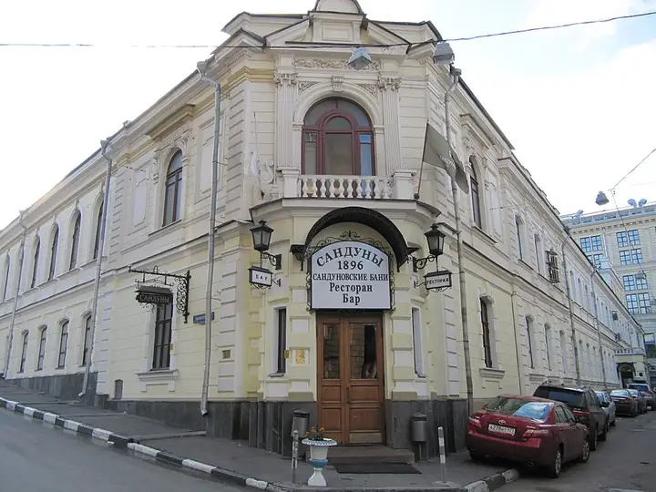
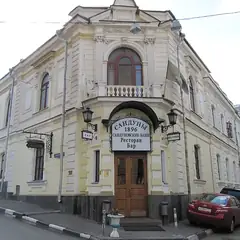

Фото: Vladimir OKC, общественное достояние · Wikimedia Commons
Баня · ЦАО
Сандуновские бани
Легендарные бани в центре: парная, бассейн и дворцовые интерьеры.
- ₽₽₽ · дороже 3 000 ₽ на человека
- в 1 плане
Позвать сюда: Сандуновские баниОткрыть в каталоге: Сандуновские баниМаршрут до места: Сандуновские бани
Адрес и детали
- Адрес
- Неглинная ул., 14, стр. 4
Открыть на Яндекс Картах (в новой вкладке) - Метро
- м. Кузнецкий Мост
- Округ
- Центр (ЦАО)
- Цена
- дороже 3 000 ₽ на человека
Планы с этим местом 1

- Сандуновские бани · Баня · м. Кузнецкий Мост
- 9 минут пешкомTap & Barrel Pub · Паб
Классика: сначала Сандуны, потом паб с большим экраном.
Открыть план: Пар и пинтаПозвать сюда: Пар и пинта
Фото: Vladimir OKC, общественное достояние · Wikimedia Commons
Входит в подборки
Похожие рядом

Что ещё рядом
Как позвать
- Выбери план, место или событие — в карточке адрес, цены и маршрут в Яндекс Картах.
- Нажми «Позвать сюда» — соберётся приглашение-игра для свидания или голосование для компании.
- Отправь ссылку в любой мессенджер: тебе ответят, а компания отметит, куда и когда может. Бесплатно и без регистрации.